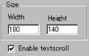
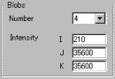
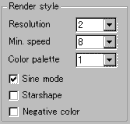

|
This applet displays so-called "blobs"
effect, light balls moving around the applet area and may invoke
mysterious impression to viewers.
[More technical
information about the available parameters can be found here.]
Most parameters are self-explanatory and you can
always see brief description of each parameter by moving the mouse
pointer over the wizard.
 |
First determine the applet size
and decide if you need text scrolling over the applet area by
checking "Enable textscroll" box. |
 |
Second, decide the number of blobs
to be displayed. We provide three blob generators which control
mysterious shapes of light balls. |
The generators are named "Intensity"
parameters here, since they directly affect light intensity. You
can freely change values for them, but I recommend you to leave
them as default setting, which produces a good blob effect.
 |
You can change the resolution of the effect
at "Resolution" parameter. The rotation speed
of blobs is varied, but you can set the minimum speed. With
"Sine mode" checked, the movement of blobs
is calculated using a sine curve function.
|
We have provided 6 colour palettes. You can select
one of them, while you may want to check "negative colour"
enabled.
As default, blobs are spherically shaped, but if
you select "Starshape" mode, they become star shape.
Now go to expert menu
and proceed your applet configuration.
|